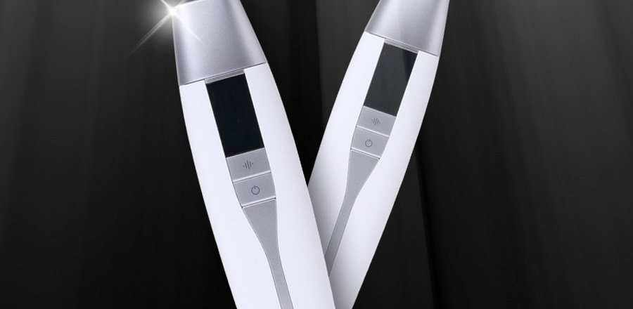

HOME / COMPANY / 브랜드 스토리
Our Story
브랜드 스토리
BORN FROM BOTOX & THERMAGE
좋은 결과는 좋은 제품만으로 만들어지지 않습니다.
careCL의 시작에는 하나의 질문이 있었습니다.
같은 Botox를 사용하고, 같은 Thermage 장비를 사용하는데
왜 결과는 사람마다, 또 전문가마다 달라질까?
글로벌 메디컬 에스테틱 현장에서 오랜 시간 다양한 고객과 시술 사례를 경험하며 발견한 차이는 제품이나 장비만이 아니었습니다.
좋은 결과를 만드는 전문가들은 먼저 사람을 이해했습니다.
- 이 사람이 무엇을 고민하는지,
- 얼굴의 어느 부분에서 변화가 시작되고 있는지,
- 어디를 먼저 관리해야 하는지를 살펴보고
- 그 사람에게 맞는 관리 방법을 설계했습니다.
careCL은 홈뷰티에서도 같은 원칙이 필요하다고 생각했습니다.
집에서도 좋은 뷰티 디바이스를 사용할 수 있게 되었지만, 대부분은 얼굴 전체를 비슷한 방법으로 관리합니다. 내가 어떤 방식으로 나이 들고 있는지, 어디가 먼저 변하고 있는지, 그리고 어디를 먼저 관리해야 하는지 알기 어렵기 때문입니다.
그래서 careCL은 제품을 만드는 것에서 한 걸음 더 나아가기로 했습니다.
UNDERSTAND FIRST.
사람마다 나이 드는 모습은 다릅니다.
누군가는 눈가의 변화가 먼저 나타나고, 누군가는 앞광대와 볼, 입가 또는 턱선의 변화를 먼저 느낍니다. 얼굴뿐 아니라 목과 바디에서도 각기 다른 변화가 나타납니다.
careCL은 이러한 차이를 6가지 노화 유형으로 이해하고, 관리가 필요한 Face, Neck & Body를 22개의 좌표로 나누었습니다.
우리가 모르는 길을 갈 때 좌표와 지도가 있으면 목적지를 더 정확하게 찾을 수 있듯, 얼굴과 몸의 노화 관리에도 기준이 되는 좌표가 필요하다고 생각했습니다.
그렇게 만들어진 것이 AGING MAP 22입니다.
나는 어떤 방식으로 나이 들고 있는가.
지금 나에게 먼저 관리가 필요한 곳은 어디인가.
그리고 그곳을 어떻게 관리해야 하는가.
AGING MAP 22는 이 세 가지 질문에서 시작합니다.
그리고 이 생각은 careCL의 기술에도 그대로 이어집니다. 피부에 대고 계속 문지르는 방식이 아니라, 관리할 위치를 정하고 그 자리에 일정 시간 머무르는 5초 스탬핑 RF 기술 역시 필요한 곳을 보다 체계적으로 관리하기 위한 careCL의 방법입니다.
좋은 제품을 만드는 것에서 한 걸음 더 나아가,
사람을 이해하고, 관리할 위치를 찾고,
그 제품을 제대로 사용할 수 있는 기준까지 만드는 것.
이것이 careCL이 지향하는 care Clinical Level입니다.